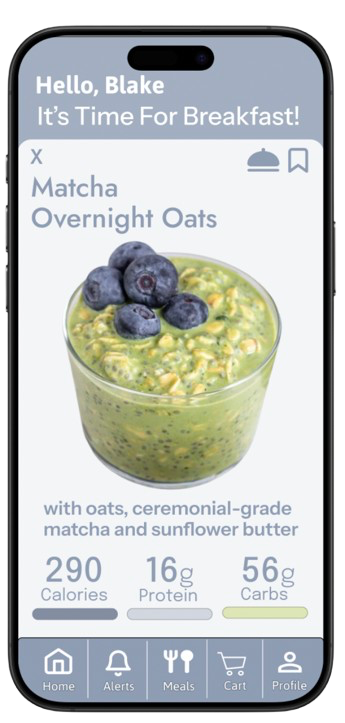
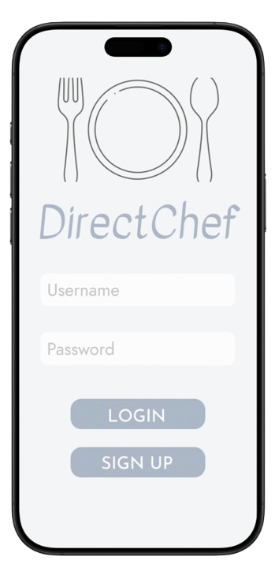
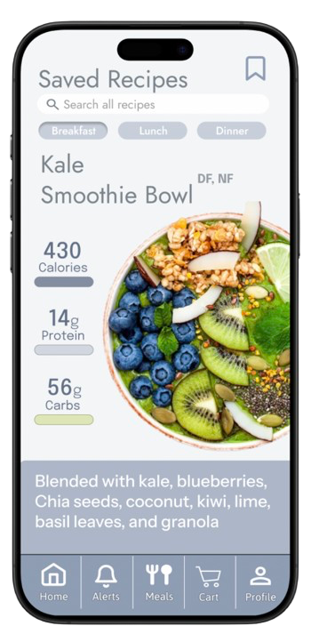
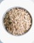
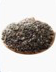
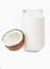
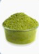
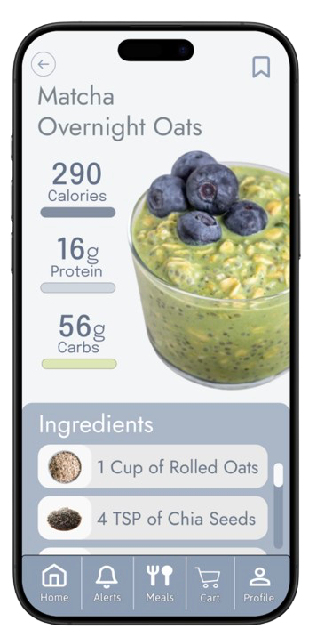
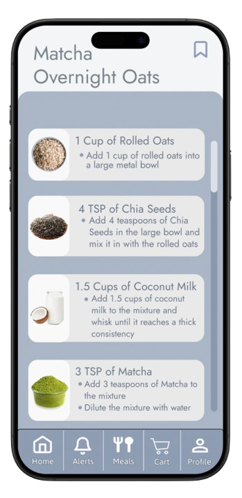
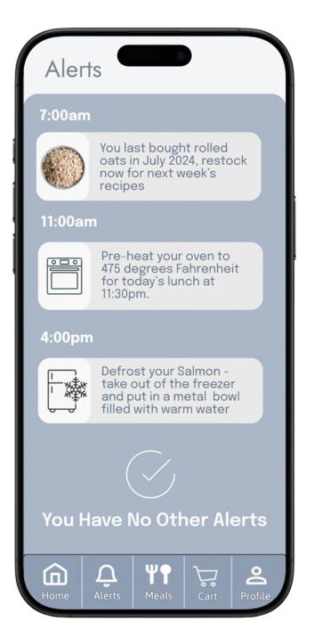

My first Figma mobile app
Meal prep, made personal.
A personalized meal-prep and recipe tutorial app designed to make cooking intuitive and enjoyable. This project taught me the fundamentals of mobile UI design, user flow, and component consistency.



Matcha Overnight Oats, as shown on the DirectChef recipe screen.
How it cooks
Add 1 cup of rolled oats into a large metal bowl.

1 Cup of Rolled Oats
4 TSP of Chia Seeds
1.5 Cups of Coconut Milk
3 TSP of MatchaSimple, clean interface that makes finding recipes effortless. The home screen greets you by name and serves the right meal for the time of day.


Clear cooking instructions with visual aids for every recipe. Each ingredient gets its own card with a photo and exactly what to do with it.
Tailored recipe recommendations based on your preferences. Saved recipes are searchable and sorted by meal, with dietary tags right on the dish.

Organize your weekly meals with smart planning tools. Timed alerts tell you what to restock, when to preheat and what to defrost.
Follow the flow from logging in to your first reminder. Tap any screen to see it up close.
Design reflection
Looking back at this first project, I'd refocus on ensuring consistent layout patterns, scalable components, and emotional cohesion throughout the user journey. This project taught me the importance of maintaining visual hierarchy and creating a seamless, minimal design that prioritizes user needs above all else.